Domination
Drużyna przytrzymuje wejście urządzenia przez kilka sekund, żeby je przejąć, i zdobywa punkty co takt, dopóki je utrzymuje. Druga drużyna może je w każdej chwili odbić.
Tę stronę przetłumaczył model AI i nie została jeszcze sprawdzona. Grasz po polsku? Pomóż nam ją sprawdzić: docs/translations w repozytorium na GitHubie.
Serwer testowy i jego demo na żywo (tests.atalaia-project.link i demo.atalaia-project.link) są wyłączone mniej więcej do 3 grudnia 2026 r., na czas podróży opiekuna projektu. Ta strona, kod i wydania na GitHubie pozostają dostępne.
Pre-alfa · fazy 1 i 2 gotowe w oprogramowaniu; prawdziwe płytki rozgrywają całe gry z kontrolerem terenu na stole warsztatowym, łącznie z klawiaturą; faza 3 gotowa w oprogramowaniu, aplikacja iOS sprawdzona na iPhonie; serwer strony z fazy 4 działa na serwerze testowym; faza 5 zbudowana w oprogramowaniu · najnowsze wydanie v0.12.0 · jeszcze nie gotowe do gry w terenie
Atalaia to otwarta platforma dla elektronicznych urządzeń do gry w airsoft, paintball i milsim: skrzynek, które drużyny przejmują, i bomb, które uzbrajają i rozbrajają. Zbuduj skrzynkę do dominacji z mikrokontrolera za 20 € (malutkiej, taniej płytki komputerowej), zamień stary telefon z Androidem w terminal do hakowania, poprowadź weekendowy milsim z 20 skrzynkami na sieci mesh LoRa (radiu dalekiego zasięgu o niskim poborze mocy, które skrzynki przekazują sobie nawzajem przez cały teren), i pisz własne tryby gry jako małe skrypty. Każda gra działa na samym terenie: bez chmury i internetu, a żaden producent nie może cię uzależnić od siebie.
Atalaia (czyt. a-ta-LAJ-a) to po portugalsku wieża strażnicza: punkt obserwacyjny na wzgórzu, z którego wypatrywano zagrożeń i przekazywano ostrzeżenie dalej. Skąd ta nazwa?
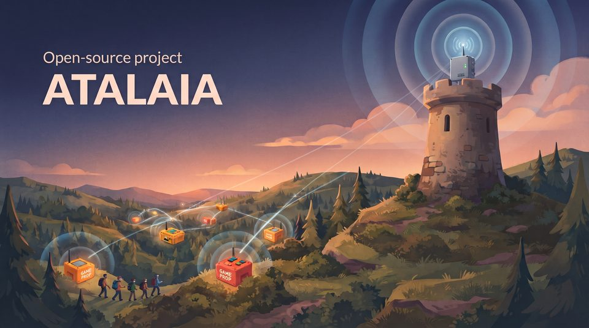
Do gry nie trzeba żadnej wiedzy technicznej. Tak będzie wyglądać gra, gdy skrzynki zostaną zbudowane (fazy 1 i 2); symulator już dziś rozgrywa te same tryby na komputerze.
Organizatorzy rozstawiają skrzynki na terenie gry i wybierają tryb gry, np. Domination, na klawiaturze skrzynki lub z telefonu, w niecałą minutę.
Aby przejąć skrzynkę, drużyna przytrzymuje przycisk swojego koloru przez kilka sekund. Skrzynka świeci się w tym kolorze i nalicza punkty drużynie, dopóki druga strona jej nie odbije.
Każda skrzynka melduje się przez radio do kontrolera terenu, małego komputera w bazie; sygnał z odległych skrzynek przekazują te pośrodku. Skrzynka, która traci łączność, gra dalej i nadrabia później.
Kontroler wszystko sumuje. Organizatorzy śledzą grę na żywo w telefonach, a teren może pokazywać wynik na dużym ekranie lub na streamie.
Elektroniczne urządzenia do gry dużo wnoszą do rozgrywki, ale komercyjne systemy zamykają zasady w zamkniętym firmware. Nowe tryby zależą od producenta, nie ma publicznego API i nie można dodać własnego sprzętu. Atalaia robi to inaczej.
Każda gra działa na samym terenie, całkowicie offline, od jednego domu po wielokilometrowy las. Internet jest opcjonalny.
Tanie płytki ESP32, komputery Raspberry Pi wielkości karty kredytowej, proste płytki klasy Arduino oraz nowe lub używane telefony z Androidem mają swoje miejsce w tej samej grze. Oprogramowanie dla skrzynek ESP32, kontrolera terenu i telefonów z Androidem jest napisane; płytki klasy Arduino przyjdą później.
Tryby gry to krótkie skrypty Lua, małe pliki tekstowe z zasadami, z plikiem ustawień: łatwe do czytania, zmieniania i udostępniania, a żaden tryb nie potrzebuje własnego kodu we wbudowanym oprogramowaniu skrzynek. Skrzynki mają swoje tryby wbudowane, a między grami skrzynka może dostać podpisany nowy tryb od kontrolera terenu bez ponownego flashowania (reinstalacji) tego oprogramowania: zbudowane, jeszcze niewypróbowane na prawdziwej skrzynce.
Urządzenia komunikują się przez Skirmesh-RF, udokumentowany protokół radiowy, więc każdy może zbudować urządzenie, które dołączy do gry. Kontroler terenu udostępnia API MQTT, REST i WebSocket dla tablic wyników, nakładek na stream i innych narzędzi.
Role graczy, squady, check-in na terenie z wydrukowanym plakatem oraz rejestr chrono, który przechowuje podpisane pomiary każdej repliki do wyrywkowych kontroli, są zbudowane w oprogramowaniu; własne scenariusze przyjdą w fazie 4.
Tereny pobierające opłaty za wstęp i twórcy sprzedający skrzynki są mile widziani. Każdy, kto rozpowszechnia lub hostuje zmienioną wersję, udostępnia zmiany z powrotem.
Prościej mówiąc: urządzenia na terenie rozmawiają przez radio z kontrolerem terenu, małym komputerem w bazie, który prowadzi grę i liczy wynik. Telefony łączą się z nim przez Wi-Fi, a tablice wyników, nakładki na stream i aplikacje mapowe takie jak ATAK przez jego API. Opcjonalny serwer strony w internecie przechowuje konta i historię. Kontroler, jego API i konsola organizatorów są zbudowane i grają z prawdziwymi skrzynkami na stole warsztatowym, jeszcze nie w terenie; serwer strony też jest zbudowany i działa na serwerze testowym, jeszcze nie na prawdziwym terenie.
Pod maską każde urządzenie, które uruchamia tryby gry, korzysta z tego samego wspólnego rdzenia, napisanego w C11, i tych samych trybów Lua; różni się tylko cienka warstwa dla każdego rodzaju sprzętu. Tryb napisany raz działa tak samo na skrzynce, telefonie czy Raspberry Pi.
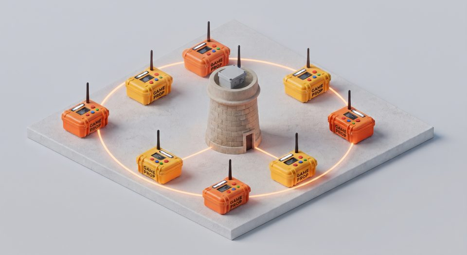
Urządzenia komunikują się przez LoRa, radio dalekiego zasięgu o niskim poborze mocy, we własnym protokole Atalaia, Skirmesh-RF. Dwa diagramy pokazują, co LoRa potrafi, a czego nie, na terenie gry, i jak jeden protokół działa na bardzo różnych urządzeniach. Nic z tego nie było jeszcze na prawdziwym terenie.
Tryby reagują na intencję („drużyna przejmuje to urządzenie”), a nie na sprzęt, więc ten sam skrypt działa na Field Boksie, skrzynce z klawiaturą albo telefonie z Androidem. Czternaście trybów, jeden modyfikator i Medic Kit są już napisane i przetestowane w oprogramowaniu; żaden nie działał jeszcze na prawdziwym terenie gry.
Drużyna przytrzymuje wejście urządzenia przez kilka sekund, żeby je przejąć, i zdobywa punkty co takt, dopóki je utrzymuje. Druga drużyna może je w każdej chwili odbić.
Atakujący uzbrajają bombę, a potem jej bronią; obrońcy muszą ją rozbroić, zanim skończy się zapalnik. Wybuch kończy grę zwycięstwem atakujących. Uzbrajanie i rozbrajanie odbywa się przytrzymaniem przycisku albo każda drużyna dostaje własny kod na klawiaturze.
Gracze noszą podpisane tagi NFC. Drużyna skanuje zebrane tagi na stacji: tag przeciwnika potwierdza trafienie, tag kolegi z drużyny je anuluje. Podrobione tagi są odrzucane.
Trzy tryby tak, jak pokazuje je skrzynka: animacje rysowane przez kod firmware'u samego Field Boksa, a nie makiety. Przycisk pod każdym obrazkiem go wstrzymuje. Niżej zrzuty ekranu aplikacji.


Tryby powyżej to animacje rysowane przez kod firmware'u. To jest wersja warsztatowa Field Boksa (jedna płytka i luźne kable, bez obudowy) grająca naprawdę w Domination.
Własne ekrany aplikacji są po portugalsku, angielsku, niemiecku i w chińskim tradycyjnym, a ekrany każdego trybu rysuje ona z tych samych plików YAML co Field Box. To obrazy z testów aplikacji, a nie zdjęcia telefonu: aplikacja działała na emulatorach Androida, jeszcze nie na prawdziwym telefonie.
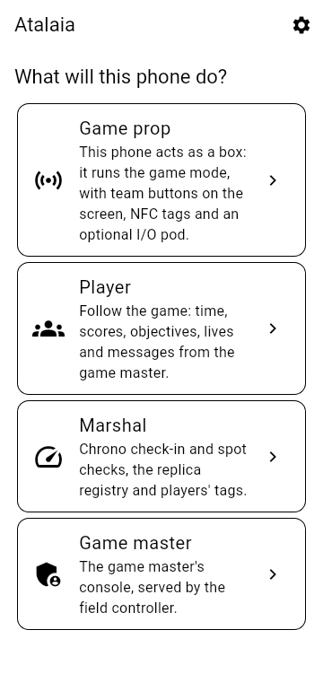
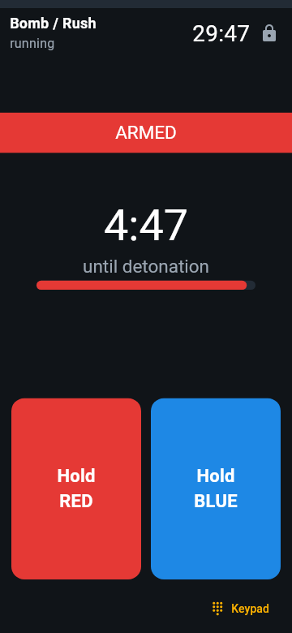
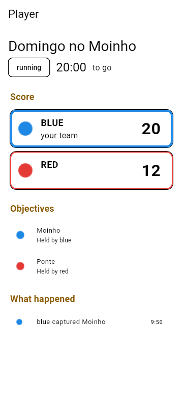
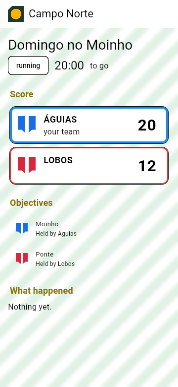
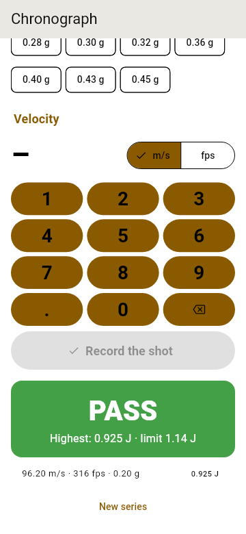
Medic Kit rysuje swoje ekrany z tych samych plików YAML na Field Boksie i na urządzeniu z Androidem, po portugalsku, chyba że GM ustawi angielski, niemiecki lub chiński. Tak rysuje je aplikacja:
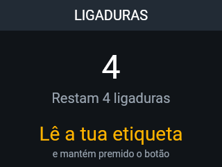
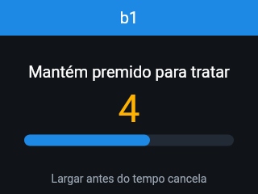
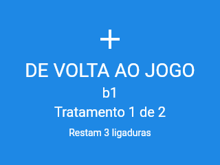
Sprzęt nie jest potrzebny: wspólny rdzeń działa na komputerze. Symulator odtwarza tryb w twojej przeglądarce: przytrzymuj przyciski drużyn, obserwuj ekran każdego urządzenia i śledź log zdarzeń. Polecenia poniżej wpisuje się w terminalu.
cmake -S core -B build -DATALAIA_SHARED=ON
cmake --build build
cd simulator
python -m atalaia_sim serve ../modes/bombcd simulator
python ../tools/docker_sim.py serve ../modes/bombPotem otwórz http://localhost:8000. Potrzebujesz Pythona 3.10+ z PyYAML. Poradnik symulatora opisuje wszystkie opcje.
Firmware Field Boksa, radiomodemu USB i modułu I/O jest napisany i wszystkie trzy działają w testach na komputerze. Firmware Field Boksa i modemu działa na prawdziwych płytkach Heltec V4.3 na stole warsztatowym: skrzynka dołącza do gier kontrolera terenu przez radio, za pośrednictwem drugiej płytki jako modemu, rozgrywa je do końca i przyjmuje aktualizacje firmware'u przez radio, a jej mały ekran pokazuje grę; firmware modułu nie działał jeszcze na płytce. Żeby wypróbować samą płytkę bez skrzynki, jest warsztatowa wersja firmware'u (klawisze przez kabel USB). Żeby zbudować skrzynkę i wgrać firmware, skorzystaj z instrukcji budowy; poradnik firmware'u buduje też modem i moduł.
v0.9.0 (6 listopada 2026) to pierwsze wydanie na GitHubie z aplikacją: atalaia-app-0.9.0.apk, podpisany kluczem projektu, więc każde wydanie instaluje się na poprzednie. Najnowsze, v0.12.0 (12 listopada 2026), instaluje się na nie i zachowuje dane aplikacji; od v0.10.0 APK jest budowany bez klucza podpisującego i podpisywany w osobnym kroku, bez sieci. Odcisk SHA-256 certyfikatu to 9C:35:0D:17:37:D6:C5:35:CD:3E:D1:04:28:8E:65:AD:7D:B4:FA:CE:8E:4E:6F:27:75:3B:7B:7C:38:40:A1:99; Android odrzuca aktualizację podpisaną innym kluczem. Aplikację zainstalowaną ze starszej wersji debugowej trzeba najpierw raz odinstalować (instrukcje mówią, co się wtedy traci). Możesz też sam zbudować debugowy APK za pomocą Dockera i zainstalować go na telefonie z Androidem 8.0 lub nowszym albo w emulatorze Androida, jak wyjaśnia poradnik aplikacji. Działała na emulatorach, jeszcze nie na prawdziwym telefonie.
Instrukcje dla osób, które używają Atalaia, a nie dla programistów: dla graczy, organizatorów, sędziów, operatorów skrzynek i telefonów-rekwizytów, administratorów terenu i osób, które budują skrzynki, po angielsku i po portugalsku, z jednostronicowym szybkim startem. Opisują, co oprogramowanie pokazuje dziś, i zaznaczają, czego nie wypróbowano jeszcze na terenie gry.
Sześć faz, każda zamykana prawdziwym testem w terenie: to jej bramka. Oprogramowanie wyprzedza sprzęt: fazy od 1 do 3 są gotowe w oprogramowaniu (prawdziwe płytki rozgrywają całe gry na stole warsztatowym, a aplikacja na iOS przeszła swoją listę kontrolną na iPhonie); fazy 4 i 5 są zbudowane w oprogramowaniu. Bramki czekają na zbudowane skrzynki, testy w terenie, prawdziwy serwer i klucz rejestru projektu. Najnowsze wydanie to v0.12.0 (12 listopada 2026): Field Box zapisuje karty dołączenia, kartę terenu i tagi graczy własnym czytnikiem NFC, z komputera na stole warsztatowym, a sterownik czytnika jest przetestowany na komputerze (jeszcze nie na prawdziwym czytniku). Niczego nie trzeba aktualizować razem. v0.11.0 (7 listopada 2026) przyniosło dowód telefonu, na którym zrobiono zapis, przy meldowaniu, z informacją dla obsługi, czy meldunek jest powiązany z tym telefonem, czy nie, i przygotowało procedurę wypalania utwardzonego obrazu Field Boxa (na razie nie dostaje go żadna płytka); v0.10.0 (7 listopada 2026) poprawki z przeglądu, które wzmacniają uwalnianie skrzynek, które utknęły, przejmowanie gry przez kontroler zapasowy i meldowanie z biletem, oraz APK podpisany bez sieci; v0.9.0 (6 listopada 2026) uwalnianie skrzynek, które utknęły (na razie jeden test na stole warsztatowym), i pierwszą aplikację na Androida podpisaną kluczem projektu.
Wspólny rdzeń, piaskownica Lua, kodek Skirmesh-RF i symulator w przeglądarce. Bramka zaliczona.
Firmware Field Boxa i instrukcja budowy; prawdziwa płytka rozgrywa całe gry na stole warsztatowym, teraz z ekranem, klawiaturą i przyciskami podłączonymi luźnymi przewodami (zdjęcie i klip na stronie budowy). Opuszczenie zakończonej gry na samej skrzynce weszło do v0.9.0, jeszcze niewypróbowane na prawdziwej skrzynce. Od v0.10.0 menu administracyjne skrzynki otwiera się w trakcie gry tylko wtedy, gdy gra jest wstrzymana lub czeka, a utwardzony obraz wydania już się buduje; v0.11.0 przygotowuje procedurę jego wypalania, a na razie nie dostaje go żadna płytka. Od v0.12.0 skrzynka zapisuje karty własnym czytnikiem NFC, na potrzeby stołu warsztatowego, jeszcze niewypróbowane na prawdziwym czytniku. Wciąż czeka na zmontowaną skrzynkę.
Skirmesh-RF przez LoRa, kontroler terenu, API, konsola GM i pakiet trybów, przetestowane w oprogramowaniu; na stole warsztatowym prawdziwe płytki rozgrywają całe gry z kontrolerem przez radio, a to, co wykazał stół, jest poprawione w oprogramowaniu. Uwalnianie skrzynek, które utknęły w zakończonej grze, weszło do v0.9.0 i przeszło pierwszy test na stole warsztatowym. v0.10.0 je wzmacnia: skrzynka ignoruje zwolnienie dla całego terenu na innym kanale albo dopóki wciąż słyszy swoją grę, a automatyczne ponowienia mieszczą się w jednym budżecie czasu nadawania. Czeka na 5 zbudowanych skrzynek na terenie.
Urządzenia na Androidzie, moduł I/O, aplikacja dla graczy i tryby wymagające telefonów: gotowe w oprogramowaniu, łącznie z iOS (sprawdzone na iPhonie). Test w terenie czeka na prawdziwe telefony i moduły.
Serwer strony, planowanie gier i rejestracja, własne scenariusze, zaawansowane tryby, ATAK. Każdy krok w oprogramowaniu jest zbudowany; logowanie przez Google i Microsoft wypróbowano naprawdę na serwerze testowym. Następne są prawdziwy serwer, warunki uruchomienia hostingu i testy sprzętu.
Wizualny edytor trybów, podpisane pakiety trybów, rejestr trybów jako szablon, niemiecki i chiński tradycyjny, instrukcje budowy, moduły tarczy i wyjść na porcie rozszerzeń. Każdy krok w oprogramowaniu jest zbudowany. Najnowsze wydanie, v0.12.0, jest podpisane kluczem wydań projektu i zawiera aplikację na Androida, zbudowaną bez klucza i podpisaną kluczem Androida projektu w osobnym kroku, bez sieci.
Tu spotkają się tereny, drużyny i konstruktorzy. Wszystko jest dobrowolne: hub przechowuje tylko to, co ktoś sam zdecyduje się opublikować, a dane z gier zostają na serwerach każdego terenu.
Pytania, pomysły, recenzje projektu i relacje z wydarzeń. Przejdź do Discussions
Zdjęcia, listy części, pliki obudów i notatki o okablowaniu każdej konstrukcji, począwszy od pierwszych prototypów Field Box.
Dobrowolna lista terenów i drużyn, które korzystają z Atalai, z regionem, typem terenu i linkiem kontaktowym.
Rejestr trybów już działa, ale nie ma w nim jeszcze żadnego trybu: dodaj pierwszy. Przeglądarka z opisami i ocenami społeczności pojawi się później.
Dobrowolne, anonimowe sumy wersji, platform i rozegranych trybów. Domyślnie wyłączone.
Dla klubów bez wsparcia IT, po kosztach, z danymi każdego klubu oddzielnie i z możliwością eksportu.
Atalaię tworzą gracze, właściciele terenów i konstruktorzy. Już dziś możesz pomóc:
Każdy commit zawiera linię Signed-off-by, a projekt jest ściśle clean-room, pisany od zera: żadnego kodu, firmware'u, instrukcji, dźwięków ani obrazów z jakiegokolwiek produktu komercyjnego.
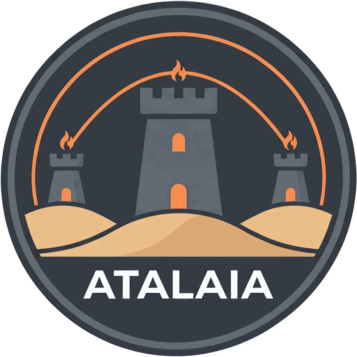
Atalaia to wieża strażnicza: punkt obserwacyjny na wzgórzu lub na odcinku wybrzeża. Słowo trafiło do portugalskiego z arabskiego aṭ-ṭalāʾiʿ, „zwiadowcy”, a estar de atalaia nadal znaczy „być na czatach”.
Kontroler terenu widzi każde urządzenie na terenie gry i w chwili, gdy coś się zmienia, informuje GM. Wieże strażnicze też były local-first i tworzyły pierwotny mesh o małej przepustowości: dym za dnia, ogień nocą, przekazywane z wieży do wieży. Skirmesh-RF działa według tych samych zasad, tylko z LoRa.
Urządzenia Atalai to sprzęt do gry. Niech wyglądają jak urządzenia do gry: jaskrawe kolory, wyraźne etykiety „GAME PROP” i nic, co przypominałoby prawdziwy ładunek wybuchowy. Przewoź je w oznaczonych skrzyniach, nigdy nie zostawiaj bez nadzoru poza terenem gry i obchodź się ostrożnie z bateriami litowymi.